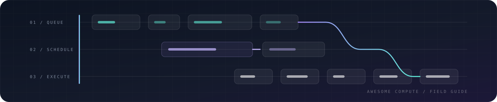

#Awesome Compute 
A curated guide to compute orchestration, distributed execution, serverless runtimes, GPU infrastructure, workflow engines, and production observability.
Compute is not one category. A cluster scheduler, a Python task runtime, an LLM inference server, and a durable workflow engine solve different problems. This list is organized around those decisions rather than around vendor popularity.
Editorially reviewed: June 10, 2026 · Entries: 47 software projects + 20 commercial providers · Standard: useful, maintained, differentiated, and documented.
#Contents
- How to Choose
- Compute Hardware in 60 Seconds
- Scope
- Cluster Orchestration and Scheduling
- Distributed Computing
- Serverless and Elastic Compute
- GPU and AI Compute
- Workflow Orchestration
- Container and Isolation Runtimes
- Compute Observability
- Decentralized and Data-Local Compute
- Commercial Compute Providers
- Learning Resources
- Related Awesome Lists
#How to Choose
| I need to... | Start with | Why |
|---|---|---|
| Run long-lived containerized services | Kubernetes or Nomad | General scheduling, service discovery, rollouts, and ecosystem integrations. |
| Schedule HPC or MPI batch jobs | Slurm | Designed for supercomputers, queues, reservations, and tightly coupled jobs. |
| Run many independent jobs across shared machines | HTCondor | High-throughput scheduling for large numbers of loosely coupled jobs. |
| Queue AI jobs on Kubernetes | Volcano or Kueue | Batch queues, admission control, gang scheduling, and accelerator-aware workloads. |
| Parallelize Python code | Ray or Dask | Python-native tasks, actors, arrays, dataframes, and cluster execution. |
| Process large batch datasets | Apache Spark | Mature distributed SQL and data-processing ecosystem. |
| Process stateful event streams | Apache Flink | Low-latency streaming with durable state and event-time semantics. |
| Scale HTTP services to zero | Knative Serving | Kubernetes-native revisions, traffic splitting, and request-driven scaling. |
| Scale workers from queues or events | KEDA | Connects Kubernetes autoscaling to external event sources. |
| Serve large language models | vLLM or SGLang | High-throughput inference with batching, caching, and model-specific optimization. |
| Serve models from several frameworks | Triton Inference Server | Production model server for TensorRT, PyTorch, ONNX, Python, and more. |
| Build scheduled data pipelines | Apache Airflow, Dagster, or Prefect | DAGs, retries, state, scheduling, and operational visibility. |
| Run scientific pipelines across laptop, HPC, and cloud | Nextflow or Snakemake | Portable, reproducible research workflows. |
| Make application workflows survive failures | Temporal | Durable execution for long-running business and service processes. |
| Isolate untrusted container workloads | gVisor, Kata Containers, or Firecracker | Adds sandbox, VM, or microVM isolation boundaries. |
#Compute Hardware in 60 Seconds
These labels describe different execution architectures. Product names are not always interchangeable, even when they accelerate similar workloads.
| Type | What it is | Start here when | Main trade-off |
|---|---|---|---|
| CPU | General-purpose processor optimized for flexible, branching workloads. | Running operating systems, application logic, databases, preprocessing, and small or irregular models. | Lower throughput than accelerators for large parallel tensor operations. |
| GPU | Highly parallel processor with a broad software ecosystem for graphics, simulation, AI training, and inference. | You need flexible accelerated computing, especially with CUDA, ROCm, PyTorch, or JAX. | Memory capacity, power, interconnect, and utilization often dominate cost. |
| TPU | Google's machine-learning ASIC for large matrix operations, available through Google Cloud. | A supported JAX or PyTorch/XLA workload maps cleanly to large, regular tensor operations. | XLA compilation, supported operations, shapes, and Google Cloud availability constrain portability. |
| NPU | General term for neural-processing accelerators, commonly integrated into client, edge, and mobile systems. | You need efficient local inference with low power use and a supported model toolchain. | “NPU” covers different vendor architectures with limited software portability. |
| LPU | Groq's statically scheduled processor architecture designed for predictable AI inference. | Low-latency supported-model inference through GroqCloud or GroqRack matters more than raw hardware control. | It is a vendor-specific inference architecture, not a general accelerator category. |
| Wafer-scale engine | Cerebras processor spanning most of a silicon wafer to keep compute and memory communication on one device. | Very large model training or high-speed inference fits the Cerebras software and service model. | Specialized hardware, software, availability, and deployment model. |
| FPGA | Reconfigurable logic that can implement custom data paths after manufacturing. | Deterministic latency, streaming pipelines, networking, or a specialized kernel justifies hardware design effort. | Development is more specialized than programming CPUs or GPUs. |
| ASIC | A chip designed for a specific workload; TPUs and many AI accelerators are ASICs. | Workload scale and stability justify maximum efficiency through specialized hardware. | High design cost and limited flexibility outside the intended workload. |
#Scope
Included:
- Cluster schedulers and workload managers.
- Distributed execution engines and programming models.
- Serverless, scale-to-zero, microVM, and WebAssembly compute.
- GPU operation, distributed training, and model serving.
- Workflow engines that coordinate compute.
- Container runtimes and workload isolation.
- Observability tools directly useful for operating compute.
- Selected commercial providers with a clear compute product.
Not included:
- Generic cloud service catalogs with no compute-specific guidance.
- Thin wrappers around another listed project.
- Abandoned experiments without a usable release or documentation.
- Build, packaging, and deployment tools that do not schedule or execute workloads.
- General protocol SDKs whose connection to usable compute depends on a separate application or marketplace.
- Mining-only cryptocurrency software.
- Projects included only because they have many GitHub stars.
Most software entries use an open-source license. Nomad 1.7 and later use the Business Source License, while OpenFaaS Community Edition has an EULA that restricts commercial use. Their entries call out those constraints explicitly.
#Cluster Orchestration and Scheduling
Tools that place workloads onto machines, manage capacity, and enforce scheduling policy.
| Project | Best for | Why it stands out | Watch for |
|---|---|---|---|
| Kubernetes | General-purpose container orchestration | Widely adopted control plane with extensive networking, storage, policy, and operations integrations. | A large operational surface and many choices that require platform expertise. |
| Slurm | HPC and batch clusters | Purpose-built queues, reservations, fair-share policy, topology awareness, and MPI-oriented scheduling. | Service-oriented and cloud-native application patterns are not its primary model. |
| HTCondor | High-throughput independent jobs | Schedules large numbers of loosely coupled jobs across shared, heterogeneous, or opportunistic capacity. | It is optimized for throughput rather than tightly coupled low-latency parallel jobs. |
| Nomad | Simpler mixed-workload scheduling | A single-binary scheduler for containers, VMs, Java applications, and standalone executables. | A smaller integration ecosystem and a source-available license for newer releases. |
| Volcano | Batch and AI jobs on Kubernetes | Adds queues, gang scheduling, fair sharing, and batch semantics to Kubernetes. | It adds another scheduling layer that operators must understand and tune. |
| Kueue | Kubernetes job queueing | Kubernetes-native admission control and resource sharing for batch, AI, and HPC workloads. | It manages admission and queues rather than replacing the underlying workload controller. |
#Selection notes
- Choose Kubernetes when ecosystem breadth and platform extensibility justify a larger operational surface.
- Choose Slurm when batch throughput, reservations, MPI, and managed HPC queues are the primary concern.
- Choose HTCondor when throughput across many independent jobs matters more than tightly coupled parallel execution.
- Choose Nomad when you want a smaller control plane and need to schedule more than containers.
- Add Volcano or Kueue when Kubernetes needs explicit queues and batch admission policy.
#Distributed Computing
Programming models and engines that divide work across processes or machines.
| Project | Best for | Why it stands out | Watch for |
|---|---|---|---|
| Ray | Python tasks, actors, training, and serving | Scales Python applications from local execution to clusters while supporting stateful actors and AI libraries. | Object-store pressure, dependency packaging, and cluster tuning become important at scale. |
| Dask | Parallel Python collections | Extends familiar NumPy, Pandas, and Python task patterns with dynamic distributed scheduling. | Performance depends heavily on partitioning, graph size, and data movement. |
| Apache Spark | Large-scale batch analytics | Mature distributed SQL, dataframe, streaming, and machine-learning ecosystem. | JVM operations, shuffle cost, and cluster overhead can be excessive for smaller workloads. |
| Apache Flink | Stateful stream processing | Strong event-time, checkpointing, and state semantics for continuous data applications. | Stateful streaming operations require careful checkpoint, upgrade, and backpressure planning. |
| Apache Beam | Portable batch and streaming pipelines | One programming model that can run on Flink, Spark, Google Cloud Dataflow, and other runners. | Runner portability is not perfect; behavior and supported features can differ. |
| mpi4py | MPI from Python | Python bindings for tightly coupled scientific and HPC programs using the Message Passing Interface. | MPI assumes explicit communication and is a poor fit for elastic or failure-prone clusters. |
#Ray vs. Dask vs. Spark vs. Flink
| Choose | Programming model | Strongest fit | Operational character | Avoid when |
|---|---|---|---|---|
| Ray | Python tasks, stateful actors, and distributed objects | AI applications that combine preprocessing, training, tuning, reinforcement learning, or serving | Flexible application runtime with a head node, workers, object store, and optional AI libraries | The workload is primarily SQL or dataframe ETL and a mature data platform already exists. |
| Dask | Dynamic Python task graphs plus parallel NumPy, Pandas, and Xarray collections | Scaling an existing Python analytics or scientific workflow with minimal conceptual change | Lightweight scheduler and workers that can run locally, on HPC, Kubernetes, or cloud infrastructure | The application needs durable actors, a large SQL ecosystem, or strict stateful-streaming semantics. |
| Apache Spark | Dataframes, SQL, resilient distributed datasets, and structured streaming | Large-scale ETL, lakehouse processing, batch analytics, and teams with JVM data-platform operations | Mature engine with substantial ecosystem, cluster integrations, query optimization, and shuffle infrastructure | The workload is fine-grained Python application logic or latency-sensitive actor communication. |
| Apache Flink | Stateful dataflow with event time, windows, checkpoints, and continuous operators | Long-running event processing that needs durable state and low-latency streaming semantics | Streaming-first distributed engine with explicit state backends, checkpoints, and operational lifecycle | The workload is a Python-first task application or ordinary periodic batch pipeline. |
Practical default: start with Dask for familiar Python collections, Ray for distributed application logic and AI systems, Spark for a data platform centered on SQL and ETL, and Flink for continuously running stateful streams.
#Serverless and Elastic Compute
Platforms and runtimes for event-driven execution, scale-to-zero services, and lightweight isolation.
| Project | Best for | Why it stands out | Watch for |
|---|---|---|---|
| Knative Serving | Kubernetes-native serverless HTTP | Request-driven autoscaling, revisions, traffic splitting, and scale-to-zero on Kubernetes. | Kubernetes and networking complexity remain beneath the serverless interface. |
| OpenFaaS | Packaged functions and microservices on Kubernetes | Provides a CLI, language templates, OCI images, autoscaling, metrics, and event integrations. | Community Edition restricts commercial use; Standard and Enterprise are separate commercial products. |
| Apache OpenWhisk | Event-driven function platforms | Distributed function execution with triggers, actions, rules, and pluggable runtimes. | The platform has a substantial deployment footprint and a smaller current ecosystem. |
| KEDA | Event-driven Kubernetes autoscaling | Scales deployments and jobs from queue depth, streams, databases, and many external event sources. | Scaling quality depends on the chosen scaler, workload controller, and queue semantics. |
| Firecracker | Lightweight multi-tenant microVMs | Minimal virtual machine monitor designed for high-density serverless workloads with a VM isolation boundary. | It is a low-level building block, not a complete scheduling or serverless platform. |
| wasmCloud | Distributed WebAssembly components | Runs portable components across clouds and edges using capability-based interfaces. | The component ecosystem and operational practices are less mature than containers. |
#GPU and AI Compute
Infrastructure for operating accelerators, training models, and serving inference.
| Project | Best for | Why it stands out | Watch for |
|---|---|---|---|
| vLLM | High-throughput LLM serving | Efficient attention memory management, continuous batching, and broad model support. | Supported features and peak performance vary by model architecture and hardware backend. |
| SGLang | Optimized LLM and multimodal serving | Combines a high-performance runtime with cache-aware scheduling, structured generation, and broad accelerator support. | Its fast release cadence and model-specific paths require careful compatibility testing. |
| Triton Inference Server | Multi-framework production inference | Serves TensorRT, PyTorch, ONNX, Python, and ensemble pipelines with dynamic batching. | Configuration, model repositories, and backend tuning add operational complexity. |
| KServe | Model inference on Kubernetes | Standardized predictors, autoscaling, canaries, transformers, and explainers. | It inherits Kubernetes, ingress, storage, and autoscaling complexity. |
| llm-d | Distributed LLM inference on Kubernetes | Adds cache-aware routing, disaggregated serving, autoscaling, and cluster-level orchestration above model servers. | It is a young, multi-component platform intended for advanced Kubernetes deployments. |
| BentoML | Packaging AI services | Python framework for turning models into deployable APIs and scalable inference services. | Its abstractions and deployment tooling become part of the application architecture. |
| NVIDIA GPU Operator | Operating GPUs on Kubernetes | Automates drivers, device plugins, container runtimes, node labeling, and monitoring. | Driver, kernel, Kubernetes, and GPU generation compatibility must be managed carefully. |
| DeepSpeed | Large-model distributed training | Memory, communication, and parallelism optimizations for training and inference at scale. | Configuration is workload-specific and debugging distributed failures can be difficult. |
| Megatron Core | Training transformer models at scale | Provides tensor, pipeline, data, context, and expert parallelism building blocks optimized for NVIDIA systems. | It is specialized, configuration-heavy, and closely tied to NVIDIA's training stack. |
#AI Compute Stack Boundaries
| Need | Start with |
|---|---|
| General high-throughput autoregressive LLM serving | vLLM |
| Optimized LLM, multimodal, or structured-generation serving | SGLang |
| Several model frameworks behind one production server | Triton Inference Server |
| Kubernetes-native inference resources and rollout policy | KServe |
| Cluster-level routing and distributed LLM serving | llm-d |
| Python-first packaging from model code to an API | BentoML |
| Automated GPU drivers and plugins across Kubernetes nodes | NVIDIA GPU Operator |
| Memory and communication optimization for distributed training | DeepSpeed |
| Transformer parallelism building blocks on NVIDIA systems | Megatron Core |
#Workflow Orchestration
Systems that coordinate tasks, retries, schedules, dependencies, artifacts, and long-running state.
| Project | Best for | Why it stands out | Watch for |
|---|---|---|---|
| Apache Airflow | Scheduled data workflows | Large provider ecosystem and a familiar Python DAG model for data platforms. | Scheduler and metadata-database operations grow complex at high DAG and task volume. |
| Prefect | Dynamic Python workflows | Flexible state, retries, deployments, and observability without requiring rigid static DAGs. | Product and deployment patterns have changed significantly across major versions. |
| Dagster | Data assets and lineage | Software-defined assets, testing, partitioning, lineage, and data-quality-oriented orchestration. | Its asset-oriented model requires a deliberate shift from task-centric pipelines. |
| Argo Workflows | Container-native Kubernetes pipelines | Runs DAG and step workflows where each task is a Kubernetes pod. | Pod-per-step overhead and Kubernetes debugging can be costly for fine-grained tasks. |
| Nextflow | Portable scientific pipelines | Reproducible pipelines across local machines, HPC schedulers, Kubernetes, and cloud. | Its DSL and dataflow model are specialized and take time to learn well. |
| Snakemake | Readable research workflows | Make-inspired Python workflow definitions popular in bioinformatics and computational science. | Large deployments need disciplined profiles, environments, and executor configuration. |
| Temporal | Durable application workflows | Persists workflow execution so long-running service processes survive crashes and retries. | Workflow determinism and event-history constraints shape application design. |
#Workflow engine boundaries
- Airflow, Prefect, Dagster, Argo, Nextflow, and Snakemake coordinate compute; they are not general cluster schedulers.
- Temporal is primarily for durable application logic, not for replacing a data warehouse or HPC queue.
- Use the scheduler appropriate to the workload underneath the workflow engine.
#Container and Isolation Runtimes
Low-level execution and workload-isolation components.
| Project | Best for | Why it stands out | Watch for |
|---|---|---|---|
| containerd | Core container lifecycle | CNCF runtime for image transfer, execution, storage, and supervision used by major container platforms. | It is infrastructure plumbing and normally needs higher-level orchestration and tooling. |
| CRI-O | Kubernetes-focused OCI runtime | Lean implementation of the Kubernetes Container Runtime Interface. | Its deliberately narrow Kubernetes focus makes it less suitable as a general runtime API. |
| gVisor | Sandboxed containers | Application kernel that intercepts system calls and reduces direct host-kernel exposure. | System-call compatibility and performance differ from native Linux containers. |
| Kata Containers | VM-isolated containers | Container workflows backed by hardware virtualization for a stronger isolation boundary. | VM startup, memory overhead, and hardware virtualization requirements remain. |
#Compute Observability
Tools for measuring utilization, health, latency, failures, and resource cost.
| Project | Best for | Why it stands out | Watch for |
|---|---|---|---|
| Prometheus | Metrics and alerting | Widely used pull-based monitoring system with service discovery, recording rules, and alerts. | High cardinality and long retention usually require careful design or additional systems. |
| Grafana | Operational dashboards | Visualization and exploration across metrics, logs, traces, profiles, and many data sources. | Dashboard sprawl and inconsistent metric semantics can undermine usefulness. |
| OpenTelemetry Collector | Vendor-neutral telemetry pipelines | Receives, processes, samples, and exports metrics, traces, and logs. | Pipeline sizing, backpressure, and configuration management are operational responsibilities. |
| Pyroscope | Continuous profiling | Exposes CPU and memory cost at code level across production workloads. | Profiling overhead, symbol quality, and retention should be validated for each runtime. |
#Decentralized and Data-Local Compute
Selected projects that schedule work across independently operated capacity or move execution closer to data.
| Project | Best for | Why it stands out | Watch for |
|---|---|---|---|
| Akash Provider | Operating capacity on Akash | Provider services for offering container compute through a decentralized marketplace. | Marketplace demand, payment mechanics, networking, and trust differ from conventional clouds. |
| Bacalhau | Compute over distributed data | Executes jobs where data lives across distributed, edge, and content-addressed environments. | Data availability, network topology, and executor trust constrain suitable workloads. |
| Golem Yagna | Buying and selling general compute | Implements Golem's node, marketplace, payment, and execution protocols for requestors and providers. | Runtime support, payment mechanics, and workload verification differ from a managed cloud. |
| BOINC | Volunteer high-throughput scientific computing | Mature middleware for distributing independently divisible research tasks across donated machines. | Workloads must tolerate untrusted, heterogeneous, intermittently connected hosts. |
| Hivemind | Peer-to-peer deep-learning training | Coordinates training across unreliable and heterogeneous participants without a fixed central cluster. | Security assumptions, network variability, and research-oriented operations require care. |
These systems have different trust, availability, networking, and payment models from a conventional cloud. Treat those differences as architecture inputs, not as implementation details.
#Commercial Compute Providers
Commercial services are listed separately because their evidence and selection criteria differ from open-source software.
#Hyperscale Cloud
| Provider | Best for | Main caveat |
|---|---|---|
| Amazon Web Services | Broad compute catalog, regional coverage, and enterprise integrations | Complex pricing, quotas, and egress. |
| Google Cloud | Data, Kubernetes, AI accelerators, and high-performance networking | Product and quota availability varies by region. |
| Microsoft Azure | Microsoft-centric enterprises, hybrid infrastructure, and procurement | Service naming and operational complexity. |
| Alibaba Cloud | Workloads serving China and the wider Asia-Pacific region | International and mainland China accounts, compliance, and service availability differ. |
| Oracle Cloud Infrastructure | Oracle estates, bare metal, high-performance networking, and enterprise workloads | A smaller ecosystem and regional footprint than the three largest providers. |
#GPU Cloud
| Provider | Best for | Main caveat |
|---|---|---|
| CoreWeave | Large AI clusters and accelerator-focused infrastructure | Capacity and commitment terms matter. |
| Lambda | Straightforward GPU instances and AI clusters | Smaller service catalog than hyperscalers. |
| Runpod | Self-service GPU pods and serverless GPU endpoints | Host, storage, and networking characteristics vary by product. |
| Crusoe | Large-scale AI infrastructure and energy-aware deployments | Primarily oriented toward larger customers. |
| Vast.ai | Price-sensitive access to marketplace GPU capacity | Hardware quality, uptime, and networking vary by host. |
| Prime Intellect | GPU pods, sandboxes, hosted training, and reinforcement-learning environments | The open repository is a CLI and SDK for a managed platform, not a decentralized training runtime. |
#Serverless AI Compute
| Provider | Best for | Main caveat |
|---|---|---|
| Modal | Python-defined serverless CPU and GPU workloads | Application architecture becomes provider-specific. |
| Baseten | Managed production model serving | Managed convenience costs more than operating the full stack yourself. |
| Replicate | Calling packaged models through a simple API | Less infrastructure control and potentially higher unit cost. |
| Beam | Python-first serverless GPU applications | Smaller ecosystem and service surface. |
| Cerebras Inference | Hosted inference on Cerebras wafer-scale hardware | A specialized model API rather than general-purpose GPU or VM access. |
| GroqCloud | Low-latency inference on Groq LPU hardware | A supported-model inference platform rather than general-purpose accelerator rental. |
#Edge Compute
| Provider | Best for | Main caveat |
|---|---|---|
| Cloudflare Workers | Globally distributed request and event handling | Runtime, duration, and platform limits. |
| Fastly Compute | Low-latency WebAssembly services at the edge | Requires designing around the edge execution model. |
| Vercel Functions | Web applications already deployed on Vercel | Best fit is application backends, not arbitrary cluster compute. |
Meta and xAI operate hyperscale AI infrastructure, but they are not listed as compute providers because they do not offer general-purpose public infrastructure. Their open-source projects or model APIs can qualify in the relevant categories.
#Learning Resources
#Distributed Systems
- Designing Data-Intensive Applications - Foundations for storage, replication, partitioning, streams, and distributed tradeoffs.
- Distributed Systems lecture series - Material accompanying _Distributed Systems_ by van Steen and Tanenbaum.
- MIT 6.5840: Distributed Systems - Labs and lectures covering replication, consensus, and fault tolerance.
#Kubernetes and Scheduling
- Kubernetes Documentation - Concepts, tasks, APIs, and operational guidance.
- Kubernetes Scheduling Framework - Extension points and scheduling internals.
- Slurm Documentation - Administration, scheduling, accounting, and workload commands.
#HPC and Parallel Computing
- MPI Forum - Official Message Passing Interface standards.
- LLNL HPC Tutorials - Practical MPI, OpenMP, POSIX threads, and parallel-computing material.
- OpenMP - Shared-memory parallel programming resources.
#Serverless and WebAssembly
- CNCF Serverless Whitepaper - Terminology, architecture, and ecosystem overview.
- WebAssembly Component Model - Portable component interfaces and composition.
#AI Compute Trends and Data
- Epoch AI Data Insights - Research snapshots on training compute, hardware, data centers, energy, costs, and inference economics.
- Frontier Data Centers - Open database tracking major AI data centers, construction timelines, estimated compute, power, and capital cost.
- AI Chip Owners - Estimates of how leading AI chips and compute capacity are distributed across companies and customer categories.
- Global AI Computing Capacity - Evidence and methodology behind Epoch AI's estimate of rapid global AI capacity growth.
- Hyperscaler Compute Ownership - Analysis separating control of AI compute from public access to rentable infrastructure.
- Hyperscaler Capital Expenditure - Tracks the recent acceleration in physical infrastructure investment by major technology companies.
- AI Data Center Cost Breakdown - Estimates the major cost components of gigawatt-scale AI data centers.
#Related Awesome Lists
- Awesome Kubernetes
- Awesome Serverless
- Awesome Scalability
- Awesome Distributed Systems
- Awesome HPC
- Awesome WebAssembly
- Awesome MLOps
- Awesome Observability
- Awesome Selfhosted
#Contributing
Contributions are welcome. Read CONTRIBUTING.md before opening an issue or pull request.
An entry should:
- Solve a clear compute problem.
- Have usable documentation and a working release.
- Be actively maintained or uniquely valuable enough to justify an explicit aging note.
- Add a meaningful choice rather than duplicate an existing project.
- Use an official project, documentation, or repository link.
- Include a concise description that explains why someone would choose it.